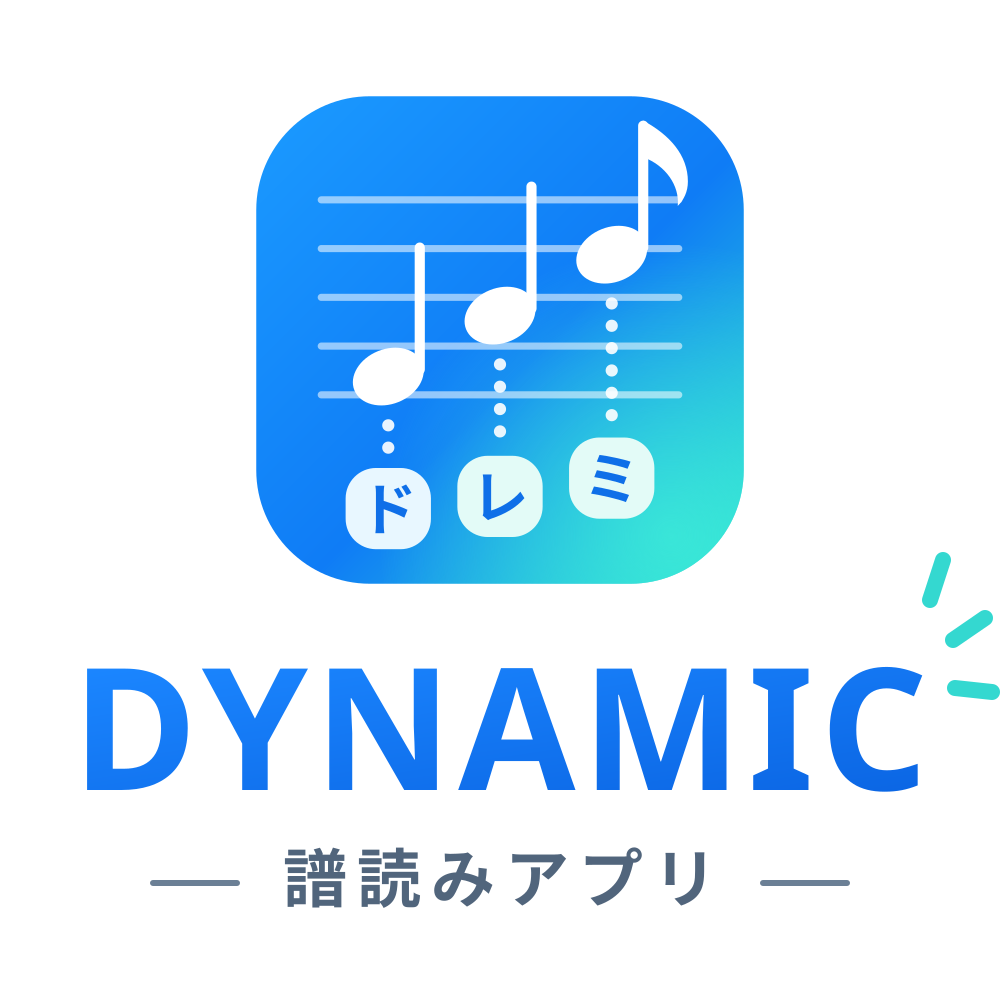

ドヴォルザーク 交響曲第8番 ホルン2番
第1〜4楽章 · 記譜ドレミ · Corno II (in F)
Claudeのサブエージェントが1ページずつ原譜と照合した転記（自己チェック済み）。第三者による独立監査は未実施。

原譜の音符ひとつひとつに記譜のドレミを付けました。音符をタップすると音が鳴り、▶で通し再生できます。小節番号・F管の読み替え・実音も切り替えられます。
第1〜4楽章 · 記譜ドレミ · Corno II (in F)
Claudeのサブエージェントが1ページずつ原譜と照合した転記（自己チェック済み）。第三者による独立監査は未実施。
第3楽章 · 記譜ドレミ／F管読み／実音 · Corno III (in D / in C)
Claudeが原譜と1音ずつ照合した転記。サブエージェントによる再照合で207〜215小節をキューとして除外済み。第三者による独立監査は未実施。
再利用ツールは tools/、曲・パート別の譜読み記録は project/、閲覧用HTML/PDFは artifacts/ に整理しています。検証状態と再生許可は別に表示しています。
previously-built-player-review-scope-limited
Combined HTML player carried forward from the prior Trombone I–III workflow. Per-part confidence and audit scope remain controlling; it is not verified against the linked recording.
Review incomplete · continuous playback not authorized
previously-reviewed-practice-artifact
540-note concert-pitch reading with continuous synthesized playback, score focus, and a large-label PDF. Original notes remain visible; audio is not aligned to the reference recording. A four-page same-page overlay excerpt keeps the original Trombone II page count.
Continuous playback authorized
previously-built-part-reading
Large-label HTML from the existing Trombone I Movement IV work. Timing JSON in project data remains marked provisional.
Review incomplete · continuous playback not authorized
trial-reading-recheck-low-confidence
The prior note review labels the reading as a trial and calls for manual rechecking of low-confidence and unusual candidates.
Review incomplete · continuous playback not authorized
provisional-omr-candidate-reading
Interim candidate HTML/PDF only. Manual note-by-note review, especially B and sharps, is still required; do not use as verified reading.
Review incomplete · continuous playback not authorized
four-movement-source-audits-incomplete
Four-movement audit status and confirmed corrections. No full movement transcription or continuous playback is authorized yet.
Review incomplete · continuous playback not authorized
先行する譜読み結果と追加の試作PDF/HTMLです。各ガイドに記載された監査状態と制約を確認してください。